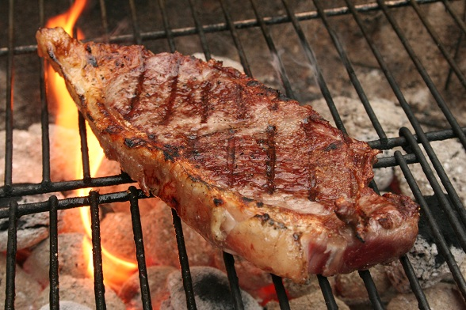

Grilled Steak

Outdoor Grilled Steak
It's time to end the steak intimidation. Grilling steak is a great method for getting that perfectly seared crust and tender, juicy interior. But for the amateur venturing out to the grill for the first time, it can seem like quite an undertaking.
But here's the good news: Using this method will make even the novice a master of the grill. Keep reading for step-by-step instructions on how to grill steak, plus find steak cooking times and temperatures for your reference.
Ingredients:
- ½- to 2-inch-thick steak(s) (we recommend ribeye, strip steaks, or filet mignon)
- 2 teaspoons olive oil
- baking soda
- ¾ teaspoon sea salt or kosher salt, or to taste
Steps:
- Prep the Steak
Steak that goes straight from the fridge to the grill will take longer to cook through, which can result in one of two things: Either the outside will char while the inside remains raw, or the steak will take so long to cook that it becomes dry and gray inside. Don't make this rookie mistake. Instead, take your steak out of the fridge between 30 minutes to an hour before grilling, this will give the steak time to come to room temperature.
You'll also want to pat the steak down before adding any seasoning, as excess moisture can inhibit searing. Once your meat is out of the fridge and patted down, brush both sides with olive oil and season with freshly ground pepper and coarse salt, around 30 minutes to an hour before grilling. This will allow the seasonings to penetrate the meat, creating a perfect crust the moment it hits the grates.
- Pre the Grill
Start with a clean grill, free of any lingering food residue. For gas grills, heat the grill on high heat, around 450 to 500 degrees F.
If you're using a charcoal grill, create what's known as a "two-zone fire." This creates one side for charring and searing and the other for gentle cooking. To do so, start by lighting your coals, and then pile them all to one side of the grill, leaving the other side empty. Once you've added your coals, replace the top grate, cover, and allow your grill to heat for about 15 minutes. Be sure to keep the lid vents open.
- Grill
Once your grill has reached temperature, go ahead and open the lid and place your steak(s) on the hot side of the grill. Grill the steaks according to the time chart above — make sure to flip your steak just once, and cook each side for about the same amount of time. In the case that your steaks are burning or you have a flare up, move them to the cooler zone.
- Check for Doneness
Use an instant-read meat thermometer to check your steaks for doneness (refer to the above chart for meat doneness temperatures). Remove the steak just before it reaches the desired degree of doneness. The steak will continue to cook even after it's removed from the grill.
- Let It Rest
Transfer the steaks to a cutting board and loosely tent them with foil. Don't cut into them just yet! Allow them to rest for five to 10 minutes, so that the juices have time to thicken and don't go to waste on the cutting board.
- Slice and Serve
Now you're ready to serve! Be sure to cut your steak against (perpendicular to) the grain. This cuts through the fibers and makes the steak easier to chew.